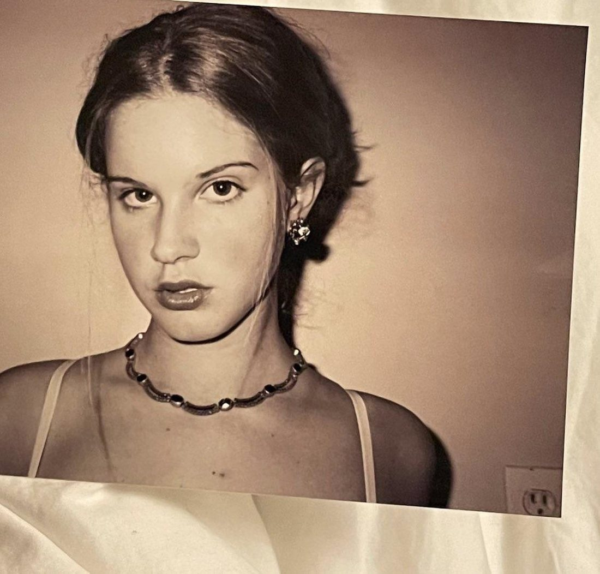

Before Lana

Early life
Elizabeth Woolridge Grant was born on June 21, 1985, in Manhattan, New York City. She grew up in Lake Placid, a small town in upstate New York, with her younger sister Caroline (known as Chuck) and her younger brother Charlie. She was raised Catholic and sang in her church choir as a child.
As a teenager she was sent to the Kent School, a boarding school in Connecticut, partly to deal with her drinking. After graduating she moved to Long Island to live with her aunt and uncle. Her uncle taught her to play the guitar, and she began writing songs.
Education
She studied philosophy at Fordham University in the Bronx, with a focus on metaphysics, and graduated in 2008. During college she performed in clubs around Brooklyn under several stage names.
Early career, 2005–2010
In 2007, while still at Fordham, she signed with the independent label 5 Points Records for a $10,000 advance. She used the money to rent a trailer in New Jersey and began recording with the producer David Kahne.
She released the EP Kill Kill in 2008 under her own name, Lizzy Grant. Her first album, Lana Del Ray, came out digitally in January 2010, and it was taken off sale about three months later.
Not long afterward she met her managers, Ben Mawson and Ed Millett, who helped her leave her contract with 5 Points. She has said her stage name was inspired by the actress Lana Turner and the Ford Del Rey sedan.